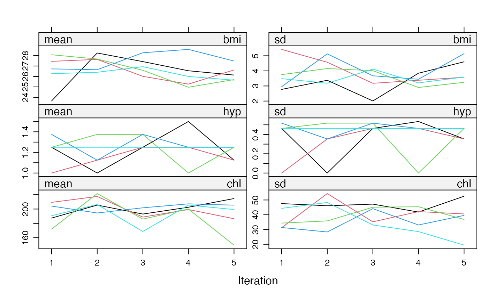

Imputes univariate missing data using classification and regression trees.
Arguments
- y
Vector to be imputed
- ry
Logical vector of length
length(y)indicating the the subsety[ry]of elements inyto which the imputation model is fitted. Therygenerally distinguishes the observed (TRUE) and missing values (FALSE) iny.- x
Numeric design matrix with
length(y)rows with predictors fory. Matrixxmay have no missing values.- wy
Logical vector of length
length(y). ATRUEvalue indicates locations inyfor which imputations are created.- minbucket
The minimum number of observations in any terminal node used. See
rpart.controlfor details.- cp
Complexity parameter. Any split that does not decrease the overall lack of fit by a factor of cp is not attempted. See
rpart.controlfor details.- ...
Other named arguments passed down to
rpart().
Value
Vector with imputed data, same type as y, and of length
sum(wy)
Numeric vector of length sum(!ry) with imputations
Details
Imputation of y by classification and regression trees. The procedure
is as follows:
Fit a classification or regression tree by recursive partitioning;
For each
ymis, find the terminal node they end up according to the fitted tree;Make a random draw among the member in the node, and take the observed value from that draw as the imputation.
References
Doove, L.L., van Buuren, S., Dusseldorp, E. (2014), Recursive partitioning for missing data imputation in the presence of interaction Effects. Computational Statistics & Data Analysis, 72, 92-104.
Breiman, L., Friedman, J. H., Olshen, R. A., and Stone, C. J. (1984), Classification and regression trees, Monterey, CA: Wadsworth & Brooks/Cole Advanced Books & Software.
Van Buuren, S. (2018). Flexible Imputation of Missing Data. Second Edition. Chapman & Hall/CRC. Boca Raton, FL.
See also
mice, mice.impute.rf,
rpart, rpart.control
Other univariate imputation functions:
mice.impute.lasso.logreg(),
mice.impute.lasso.norm(),
mice.impute.lasso.select.logreg(),
mice.impute.lasso.select.norm(),
mice.impute.lda(),
mice.impute.logreg(),
mice.impute.logreg.boot(),
mice.impute.mean(),
mice.impute.midastouch(),
mice.impute.mnar.logreg(),
mice.impute.mpmm(),
mice.impute.norm(),
mice.impute.norm.boot(),
mice.impute.norm.nob(),
mice.impute.norm.predict(),
mice.impute.pmm(),
mice.impute.polr(),
mice.impute.polyreg(),
mice.impute.quadratic(),
mice.impute.rf(),
mice.impute.ri()
Examples
imp <- mice(nhanes2, meth = "cart", minbucket = 4)
#>
#> iter imp variable
#> 1 1 bmi hyp chl
#> 1 2 bmi hyp chl
#> 1 3 bmi hyp chl
#> 1 4 bmi hyp chl
#> 1 5 bmi hyp chl
#> 2 1 bmi hyp chl
#> 2 2 bmi hyp chl
#> 2 3 bmi hyp chl
#> 2 4 bmi hyp chl
#> 2 5 bmi hyp chl
#> 3 1 bmi hyp chl
#> 3 2 bmi hyp chl
#> 3 3 bmi hyp chl
#> 3 4 bmi hyp chl
#> 3 5 bmi hyp chl
#> 4 1 bmi hyp chl
#> 4 2 bmi hyp chl
#> 4 3 bmi hyp chl
#> 4 4 bmi hyp chl
#> 4 5 bmi hyp chl
#> 5 1 bmi hyp chl
#> 5 2 bmi hyp chl
#> 5 3 bmi hyp chl
#> 5 4 bmi hyp chl
#> 5 5 bmi hyp chl
plot(imp)
